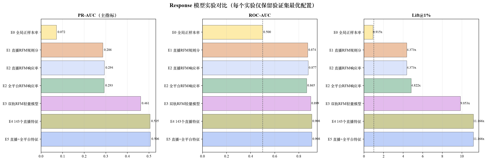
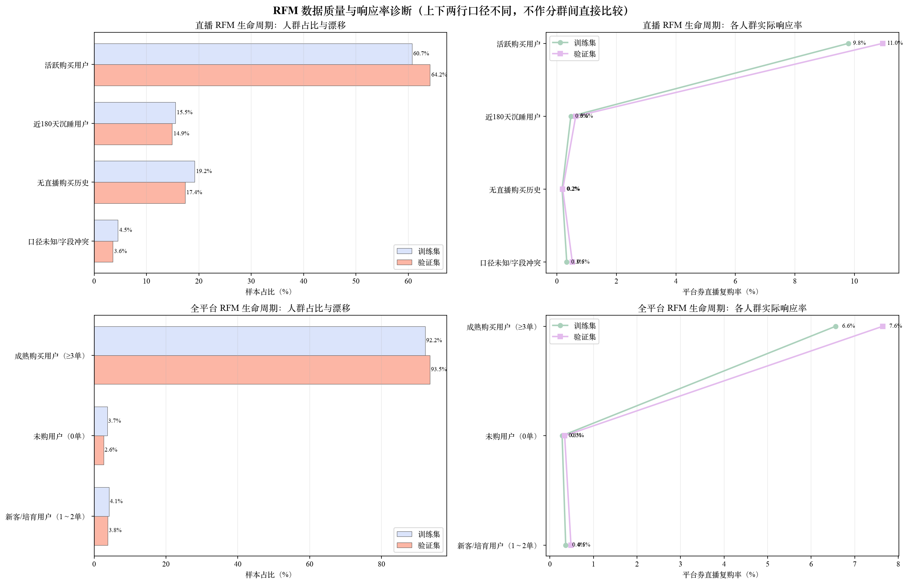

| 实验 | ROC-AUC | PR-AUC | Lift@1% | Lift@10% | 最佳轮数 |
|---|---|---|---|---|---|
| E0 全局正样本率 | 0.5000 | 0.0718 | 0.91x | 0.97x | - |
| E1 直播RFM规则分 | 0.8742 | 0.2865 | 4.37x | 4.57x | - |
| E2 直播RFM响应率 | 0.8773 | 0.2936 | 4.37x | 4.57x | - |
| E2 全平台RFM响应率 | 0.8652 | 0.2925 | 4.82x | 4.72x | - |
| E3 双轨RFM轻量模型 | 0.8988 | 0.4611 | 9.85x | 5.80x | 119 |
| E4 143个直播特征 | 0.9076 | 0.5051 | 11.17x | 5.98x | 296 |
| E5 直播+全平台特征 | 0.9080 | 0.5065 | 11.17x | 5.99x | 258 |

重点看十分位曲线是否从第 1 档到第 10 档整体下降。第 1 档代表模型认为最可能用平台券直播复购的人群。

重要性表示模型使用频率和信息增益，不等于因果关系。

图中同时展示 Train/Validation 人群占比漂移和各生命周期的平台券直播复购率。
直播和全平台生命周期定义不同，上下两行分别解释，不能将两套分群作一一对应比较。

/Users/yukewei/Public/xhs/券敏感人群第一阶段/checkpoints/20260825_162323/E5_live_plus_platform.txt/Users/yukewei/Public/xhs/券敏感人群第一阶段/checkpoints/20260825_162323/E5_live_plus_platform_preprocessor.pkl/Users/yukewei/Public/xhs/券敏感人群第一阶段/checkpoints/20260825_162323/E5_live_plus_platform_metadata.json注意：部署或批量预测时，权重和预处理器必须配套使用，不能只拿模型 txt。
validation_metrics.csv：核对完整指标。validation_*_deciles.csv：排查十分位曲线细节。*_feature_importance.csv：查看全部特征重要性。data_summary.csv、user_overlap.csv：检查数据量、正样本率和用户重合。rfm_rules_and_quality.json：核对冻结的 RFM 阈值与异常人群。